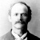

George Black's Autobiography
George Black (1823), Susannah Jaccaway (1825)
Written between 1874 and 1882 while George was suffering from poor health. He writes about his early years in Ireland. His conversion to the LDS faith after listening to some LDS missionaries in Belfast. His migration to the Rocky Mountaines and Utah. His mission. And eventual settling in the southern Utah town of Kanosh. Edit summary
William Black, the son of William and Mary Gardiner Black, was born August 20, 1784, at Lisburn, Antrim County, Ireland. At the age of seventeen years, he enlisted in the Seventy-second Regiment of the British Army in which he served four years in Ireland and seventeen years abroad. He was present at the taking of the Cape of Good Hope from the Dutch on January 6, 1806, and also when the Isle of France fell to the British from the French government. The year 1814 found him at Madras, from which place he traveled to Bengal, East Indies. In the year 1821 he left for England, and on the way home called at the Isle of St. Helena. From his records we quote:
I landed in England about the first of March and was discharged and arrived at my father's house on July 2nd of the same year. When I got home my mother, brothers and sisters were all dead; none were left but my father. On the 31st of July, 1822, I was married to Jane Johnston. I then joined the New Connexion Methodists and lived with my father until the 4th day of February, 1834, when he died, happy in the Lord. I then left my native country and went to Manchester, England, as my business at home failed. We then had a family of three sons and one daughter. My trade was very poor, but I had one shilling and five pence per day from the British Government which enabled us to get along middling well. About the 1st of January, 1839, we joined The Church of Jesus Christ of Latter-day Saints and were baptized by Elder William Clayton. I was soon ordained a teacher and at the next conference was ordained a priest and sent to Ireland with Brother John Taylor, one of the Twelve Apostles. Brother Taylor did not remain long with me, as the people of that country did not receive the Gospel. Brother Curtis was sent to me and we opened a branch at Hillsburrow where four or five were baptized before I left. Brother Curtis stayed there. I came home on account of my family, as I had to draw my pension in Manchester. The next conference I was ordained an elder under the hands of Hiram Clark and John Smith, I believe, and was sent to Oldham and Rockdale, and [p.259] with the help of James Kerigan built up two branches, and the Lord blessed our labors. I had to stop there two years.
My family went to America in 1840 while I was on my mission. The Lord blessed me in all my labors and in December 1842, I began my journey to America to join the Saints who had gone before, and landed in New Orleans on the 1st day of March, 1843, but did not get to Nauvoo on account of ice in the river, until the month of April. I heard Joseph Smith preach on the first floor of the Temple, as that was the height of it then. I started for Augusta where my family was and found them safe and well, praise the Lord. I had to go twice a year to Canada to draw my pension. On the 11th day of May, 1845, was ordained a high priest by order of President Brigham Young, under the hands of Samuel Gully and William Huntington. I moved to Nauvoo in the fall of 1844 and lived there until the expulsion of the Saints. Then moved into Iowa until the spring of 1850 at which time I crossed the plains, over 1,000 miles by ox team to the Valley of the Great Salt Lake and in the same fall, in November, moved to Sanpete Valley, 140 miles south.
In the spring I went by order of President Brigham Young and relocated in what is now known as Spring City which had been abandoned because of Indian depredations in the year 1853. In the fall of 1861, I moved to southern Utah on the Rio Virgin River, remaining there until 1873. (End of quote.)
William Black died January 28, 1873, at Rockville, Kane County, Utah. He was a man of unassuming character, strictly honest and much loved by all his acquaintances, and he died firm in the faith which is known as Mormon doctrine.
These lines may be found on his tombstone in Rockville Cemetery:
A noble veteran lieth here,
His name and acts the Saints revere.
He's blest with honors of the best,
With his armour bright, he's gone to rest.
William and Jane Johnston Black had the following children: George, born May 6, 1823; died November 1872, Kanosh, Millard County, Utah. He had two wives and was the father of thirteen children. Mary, born April 25, 1825, was married to John McDonald, a Roman Catholic, in Painesville, Ohio, and had one son. She died in 1845 at Nauvoo, Illinois. William V. born February 27, 1832, died April 1, 1927. Joseph S. Black, born July 14, 1836, died August 13, 1910, at 6:55 p.m., Deseret, Millard County, Utah.
George Black
 Born: 1823 Belfast IrelandDied: 1872 Kanosh Utah USA
Susannah Jaccaway
Born: 1825 London EnglandDied: 1879 Kanosh Utah USA
People mentioned
Sarah Black (George's daughter)William Black (George's father)
Mary Gardiner (George's mother)
John Tayler (Traveled with George as missionary)